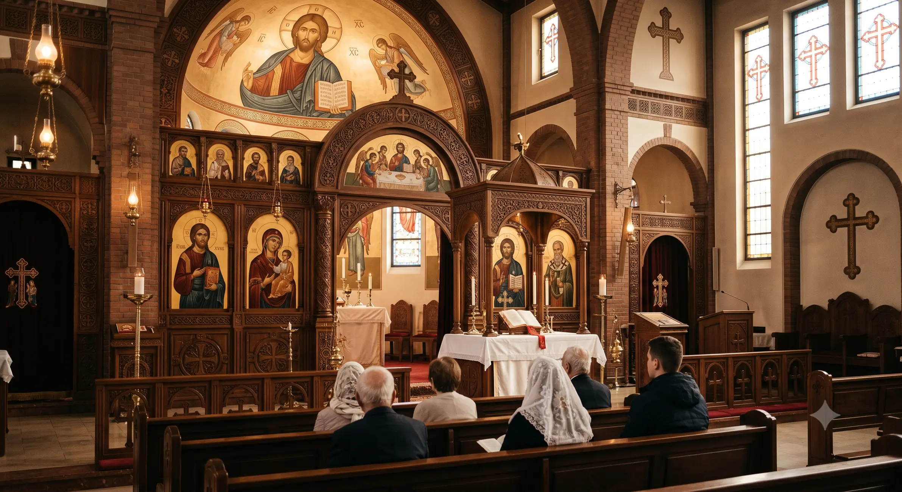

Die Koptisch-Orthodoxe Kirche
in Deutschland
Wir laden Sie ein, das Erbe der Kopten kennenzulernen — die Nachkommen der Pharaonen, die Heimat des Heiligen Markus, und eine lebendige Glaubensgemeinschaft hier in Deutschland.

Finde eine koptische Gemeinde in deiner Nähe
57 Gemeinden in Deutschland — eine ist sicher in deiner Region.
Die Kopten und die koptische Kirche
Herkunft, Geschichte und Glaube — von den Pharaonen über den heiligen Markus bis heute.
Weiterlesen →Koptischer Kalender
Feste und Fastenzeiten des laufenden Jahres im Überblick.
Zum Kalender →Koptische Kirche Deutschland
Diözesen, Klöster und alle 57 Gemeinden auf einer interaktiven Karte.
Gemeinden →Koptische Jugend
Die KJD vernetzt junge Kopten in ganz Deutschland — bei Freizeiten und im Alltag.
Mehr erfahren →Kontakt
Schreiben Sie uns — wir freuen uns über Ihre Nachricht und Anliegen.
Kontaktformular →